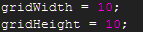
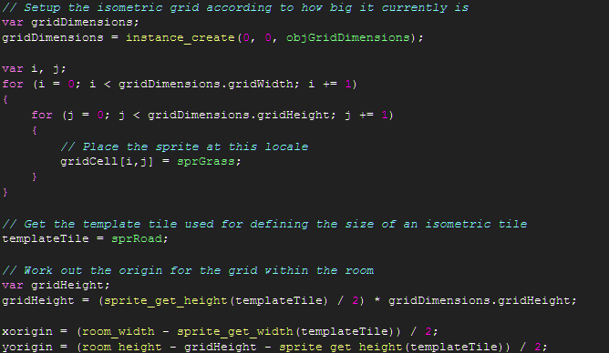
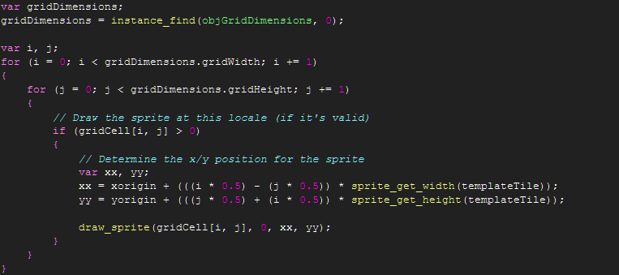

Tutorial
Page 4 of 6
Scripting Isometric
In this section we will cover the scripts used to control our isometric game. You do not have to follow these scripts to the letter
and there are better ways to handle the HUD for a more robust experience, but if you follow the ideas presented in this tutorial
you will have a good grounding of the basics required to implement an isometric game.
We'll start with the script for the size of the isometric grid. This is used as a clean way to encapsulate the size of the grid
and is simply:

Next we'll look at the scripts for setting up the isometric grid, scrIsoGridInit...

...and for drawing it, scrIsoGridDraw

Note that the location of the x,y position for the sprite at 0,0 on the grid is set to be at the centre-x of the room and
such that the grid is centrally placed in the room on the y-axis.
By using the sprite for a road tile as a template tile we guard against coupling ourselves to a specific size of sprite and
thus could re-use the code for any number of isometric games without having to change magic numbers accordingly.
For drawing the grid we are making use of the identities determined in the previous section of the tutorial.
Click on the Next button to go to the next page of the tutorial.